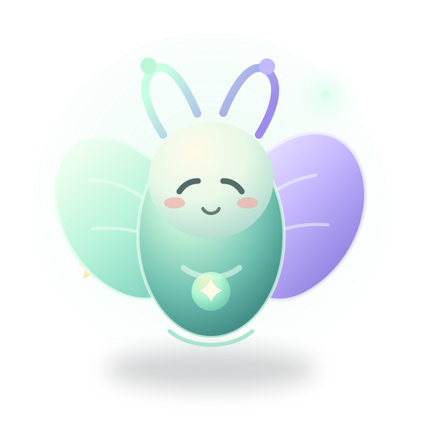

Press. Speak. Done.
A tactile, push-to-talk recorder designed to work before Wi-Fi, a browser or an AI model enters the picture.
A pocket voice notebook for the thoughts that find you mid-walk, mid-moment, mid-everything. Catch it now. Find it when it matters.
EARLY BUILD · PROJECT SCAFFOLD ONLY · NO WORKING RECORDER OR APP YET

PIP · ORIGINAL MASCOT CONCEPTThe best capture flow gets out of your way. The best memory system earns your trust. Whis2ndBrain is being designed around that balance.
A tactile, push-to-talk recorder designed to work before Wi-Fi, a browser or an AI model enters the picture.
Keep the audio as the source. A transcript can help you search it—but it is machine-made and can be wrong.
Suggestions should be editable, reviewable and allowed to say “not sure”. Nothing gets sent or filed on your behalf.
A gentle path with clear hand-offs. Each step is a design target, not a claim that the pipeline exists today.
Hold to record, release to finish. The device retains the original before it tries to sync.
Device · plannedA private host accepts a retryable upload and confirms only after a durable, matching receipt.
Host · plannedLocal transcription and optional typed suggestions can fail independently; your recording remains.
Processing · unqualifiedSearch, listen, correct, keep or discard from a mobile-friendly companion. No hidden auto-actions.
PWA · plannedWhen you ask, create Markdown in an approved Obsidian inbox—without overwriting edits.
Export · plannedPip is a little visual friend—not a wake word, not an always-listening mic, and not an agent acting on your behalf. Ambient mode is intended for calm clock and device status, not continuous recording.
“Local-first” is a direction, not a magic privacy guarantee. Storage, encryption, retention and network access still need explicit decisions and proof.
First understand the hardware. Then prove capture survives a reboot. Only then add processing, polish, and a pilot.
Eight evidence-gated milestones · task IDs mapped to the private canonical board.